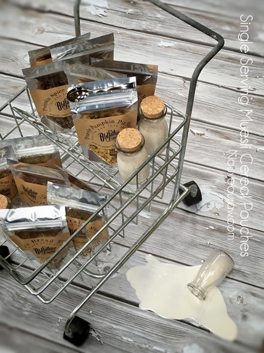
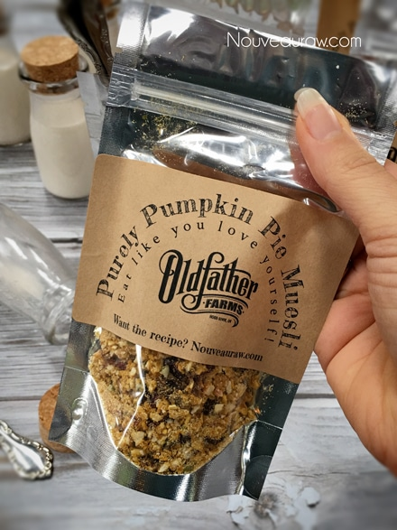
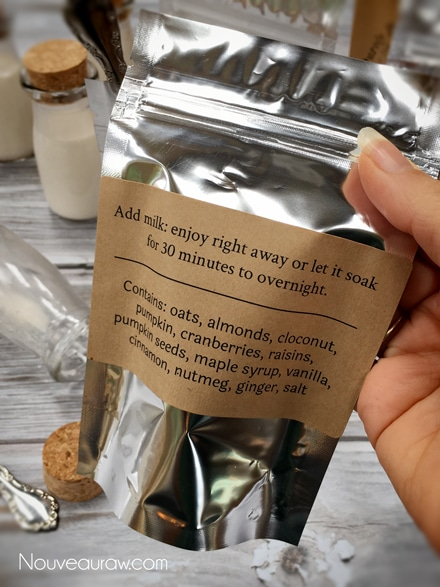
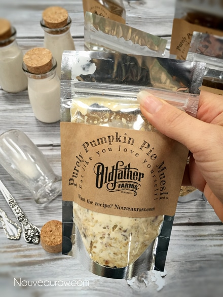
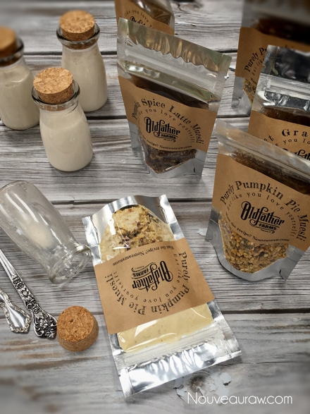
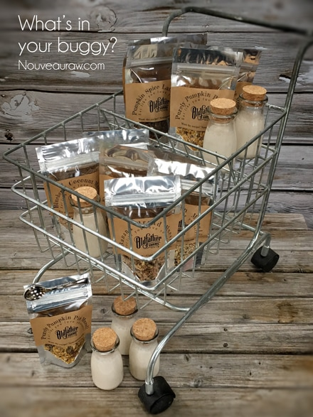

Single Serving Cereal Pouches
If you lead a lifestyle that is jam-packed and always has you on the go, it can be easy to get into a food rut, especially when it comes to finding healthy and portable breakfasts. Breakfast is probably the one meal that can be the most frustrating since our days often start with one foot out the door.
I am here to hook up the winch and pull you out of this rut by sharing this fun idea with you!
The best trick to eating cereal on-the-go is having the right container to meet your needs. Of course, the easiest way to eat cereal on-the-go is to throw a single-serving package in your bag.
These single-serving muesli cereals are loaded with delicious, whole grain oats, dried fruits, a variety of nuts and seeds, spices, and flavorings. On top of that, they are convenient and disposable! They travel well, don’t take up much space, and offer a healthy food option when you start to feel your blood sugar dropping, keeping you energized throughout your busy day.
Single serving cereals are out-of-the-box good!
They can be enjoyed in your kitchen standing by the sink, sitting at the table, in the car (not when driving!), standing in line at the post office, watching the kid’s soccer game… you name it. It will go wherever you take it! You can add milk, fruit juice, or yogurt… even plain water also works fine.
To boost the nutritional value of your dry muesli, add fresh fruit pieces. You can even soak your dry muesli mix in milk overnight and have it with fruit the next morning. Muesli can be eaten hot or cold. To prepare cold muesli, add milk, sprinkle with some fruit, and enjoy right away. To make warm/hot muesli, add warmed milk or water. My favorite way is to add almond milk and let it soak overnight, which creates a porridge-like texture with bits of crunchiness from the nuts and seeds.

There are at least six items that create a foundation for my muesli cereals:
Oats & buckwheat:
Fiber is an essential nutrient that helps to lower cholesterol and improve the health of the digestive system. Muesli contains substantial amounts of both soluble and insoluble fiber. Soluble fiber also regulates blood glucose levels and helps to improve bowel movements. Tip: Soak and dehydrate oats and buckwheat to increase the absorption of nutrients and to take the stress off your digestive system.
Nuts:
Nuts present in high amounts of phytochemicals and antioxidants. They also supply monounsaturated fats and essential fatty acids, which are beneficial for health. Tip: Soak nuts to reduce the phytic acid, which will make digesting much easier.
Seeds:
Hemp seeds, for instance, are a complete protein, meaning it contains all 20 amino acids, the key to building calorie-burning muscle. Sunflower seeds are one of the most excellent sources of the B-complex group of vitamins. Tip: Soak seeds to reduce phytic acid, which will make digesting much easier.
Flax or Chia seeds:
They are great for fiber, omega 3 fatty acids, to help with arthritis, cholesterol, menopause, hypertension, the list is endless. They also add a nice thickness to the muesli once the liquid is added. Tip: Use can use whole or ground flax or chia seeds.
Dried fruit:
Many dried fruits are an excellent source of phenol antioxidants. Which have been found to fight heart disease, cancer, osteoporosis, diabetes, cancer, and degenerative diseases of the brain, according to the November-December 2009 issue of “Oxidative Medicine and Cellular Longevity.” Tip: Select dried fruits that don’t have any additives. It should be pure fruit, preferably organic.
Himalayan pink salt:
Create an electrolyte balance, increases hydration, prevents muscle cramping. It can also help the intestines absorb nutrients, dissolve and eliminate sediment to remove toxins and helps against adrenal fatigue. Read more (here). Tip: Use the best quality salt that you can get. Do not use table salt that has been bleached.
For recipe ideas, please visit (here).

I recommend the following bags.
Stand Up Pouch ) 2 oz. w/ Ziplock Closure, Clear-Silver.
They hold 1/3 cup of cereal and 3 oz of milk… perfect for one single serving!

Love these little milk jars? Click (here) to order.

Add non-dairy milk and enjoy!
If you preferred it soaked, like me, add milk, close and let it
sit for 30 minutes to overnight.

Sealed, it won’t leak!

Next time you are grocery shopping, think twice about what
you put in your buggy.

© AmieSue.com